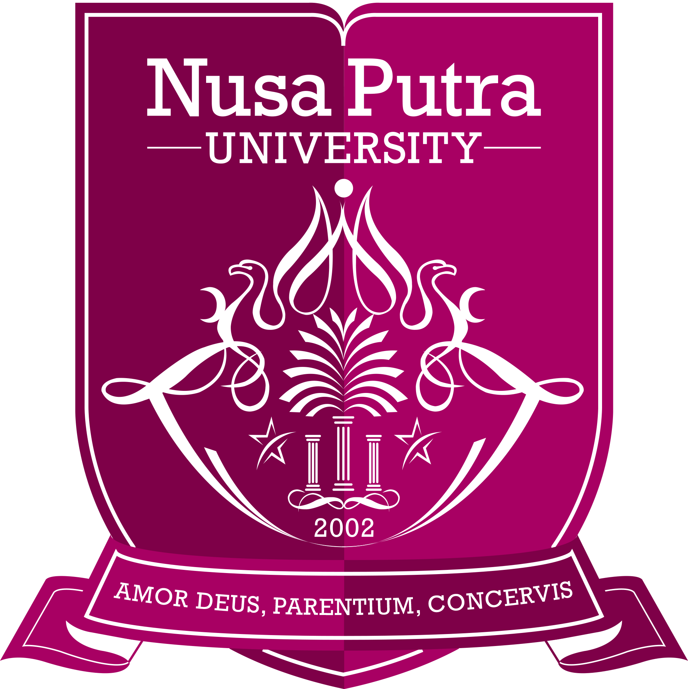
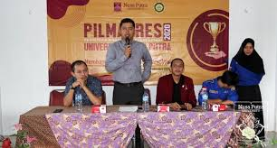

Nusa Putra University.

Nusa Putra University

+62 266 210594
info@nusaputra.ac.id
© Ikatan Alumni Sistem Informsi Universitas Nusa Putra
Info
dbvc
Kecintaan pada agama sebagai cahaya Illahi petunjuk kebenaran generasi Nusa Putra. Kecintaan kepada orangtua, para nabi, para rashul, para wali, leluhur, orang-orang shaleh dan guru-guru kita sebagai kekuatan pengikat moral yang kuat menuju cahaya kebenaran Illahiyah Kecintaan kepada sesama manusia sebagai ketundukan manusia atas kehendak Illahiyah. Kecintaan pada Illahiyah, meneladani orang tua dan mengasihi sesama sebagai pedoman kesempurnaan ahlak.
Nusa Putra University
© Ikatan Alumni Sistem Informsi Universitas Nusa Putra